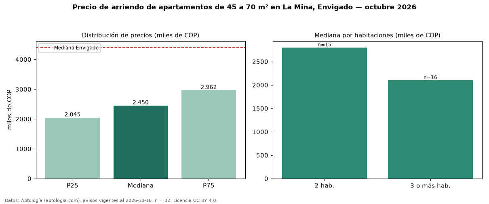

Precio de arriendo de apartamentos de 45 a 70 m² en La Mina, Envigado — octubre 2026
En La Mina, Envigado, la mediana de canon mensual de apartamentos de 45 a 70 m² es COP 2,45 millones, según 32 avisos vigentes. Frente a la mediana de todos los apartamentos en arriendo de La Mina (COP 2,58 millones, n = 56), queda 5 % por debajo; este segmento reúne el 57 % de esos avisos. Por metro cuadrado, la mediana es COP 40.641/m² al mes (n = 32), 2 % por encima del conjunto de referencia (COP 40.000/m²). El área mediana anunciada es 60 m². El segmento con más oferta es el de 3 o más habitaciones (16 avisos, mediana COP 2,10 millones); pasar de 2 habitaciones a 3 o más habitaciones cambia la mediana −25 %. El estrato más frecuente es 3 (53 % de los avisos con estrato). La mediana de todos los apartamentos en arriendo de Envigado es COP 4,40 millones (−44 % de diferencia). La mitad central de los avisos va de COP 2,04 millones a COP 2,96 millones (razón 1,4), una dispersión moderada. Datos: Aptología (aptologia.com), CC BY 4.0 — https://www.aptologia.com/arriendo/envigado/la-mina. Archivos: PDF, CSV con las cifras y gráfica PNG.

| Avisos únicos | 32 |
|---|---|
| Percentil 25 | COP 2.045.000 |
| Mediana | COP 2.450.000 |
| Percentil 75 | COP 2.962.500 |
| Mediana por m² | COP 40.641 |
Fuente: avisos vigentes de portales inmobiliarios recopilados por Aptología, deduplicados (mínimo 30 avisos únicos por celda). Precios pedidos, no cerrados. Fecha: 2026-10-18.